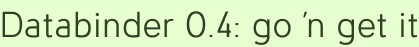

Databinder 0.4: go 'n get it
For those of you pulling your hair out waiting for Databinder to support Wicket 1.2 beta2, well, so am I. (But I need a haircut anyway.)
I figured 0.4 would show up at the Maven repository a few hours after I finished it, as 0.3 did, but my request for the upload is languishing. Now I’m doing something fairly obvious: letting eager, experienced users download it directly, while the official site will still refer to the more easily installable 0.3.
The process should be a cinch if you’ve already learned the tools in prior Databinder versions. You’ll just need to download Wicket 1.2 beta2 and Databinder 0.4. Uncompress the archives, then run “mvn install” in their project directories.
Databinder’s README.txt has release notes in it; you will need to make at least one change to your Databinder 0.3 apps. Make that change, then increment the Databinder version number in your pom.xml, and you should be good to go.
Oh, and the examples are all Ajaxified: bookmark, directory, and recipe.
Bon appétit!
Add a comment